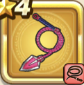

バスターウィップ
攻略班 5.5点 / スパークショットギラウィップしんくう打ちダークショット岩石打ち
くわしい特徴
【レベル別習得スキル】 Lv1スパークショット（消費MP：5）敵1体に威力120%のイオ属性体技ダメージを与えたまに幻でつつみこむ Lv8ギラウィップ（消費MP：16）敵全体にこうげき力とこうげき魔力を込めた100%のギラ属性体技ダメージを与える Lv16しんくう打ち（消費MP：16）敵全体にこうげき力とこうげき魔力を込めた100%のバギ属性体技ダメージを与える Lv20ダークショット（消費MP：16）敵全体にこうげき力とこうげき魔力を込めた100%のドルマ属性体技ダメージを与える Lv24岩石打ち（消費MP：16）敵全体にこうげき力とこうげき魔力を込めた100%のジバリア属性体技ダメージを与える Lv28怪人系へのダメージ+5% Lv36【魔法戦士】さいだいMP+8 Lv40攻撃力+8 【限界突破スキル】 1凸スキルの斬撃・体技ダメージ+3% 2凸スキルの斬撃・体技ダメージ+3% 3凸スキルの斬撃・体技ダメージ+3% 4凸スキルの斬撃・体技ダメージ+3%